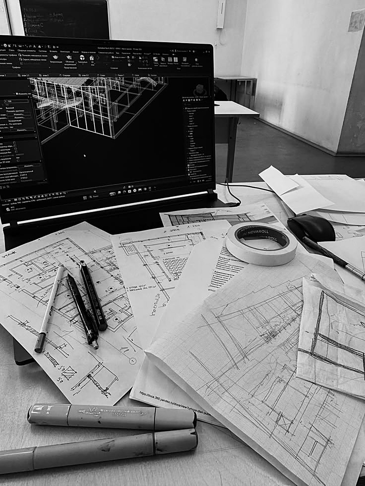

Impressum

Kalk & Ton ist ein erfundenes Unternehmen. Diese Seite ist ein Konzeptbeispiel von Renyx. Adresse, Telefonnummer und E-Mail sind ebenfalls erfunden.
Kalk & Ton Architekten
Kalkgasse 4, 8999 Felswil
044 000 80 80
hallo@kalk-ton.example
Gestaltung und Umsetzung: Renyx. Verantwortliche Angaben: Impressum von Renyx.